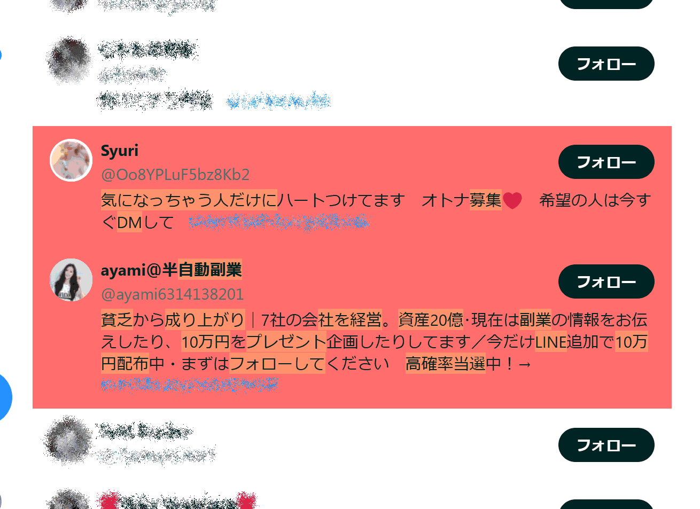

𝕏: フォロワー欄でスパムを強調表示する Violentmonkey 用スクリプト
2024/11/19 |
記事のソース
PC 版 X のフォロワー覧でスパムの可能性があるアカウントを強調表示する Violentmonkey 用スクリプトを書いてみました。フォロワー欄をパァーっとスクロールしながら怪しいアカウントを素早く見つけることを目的としています。
ダウンロード/インストール: x-spam-highlighter (GitHub)
